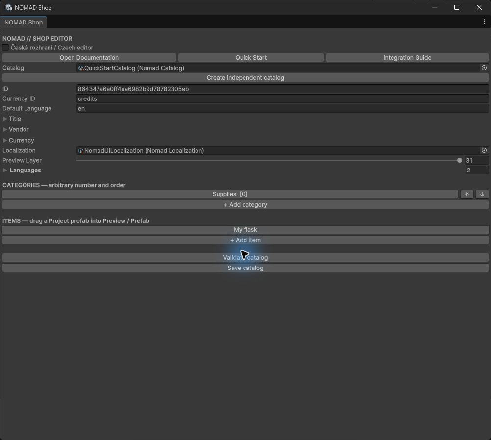
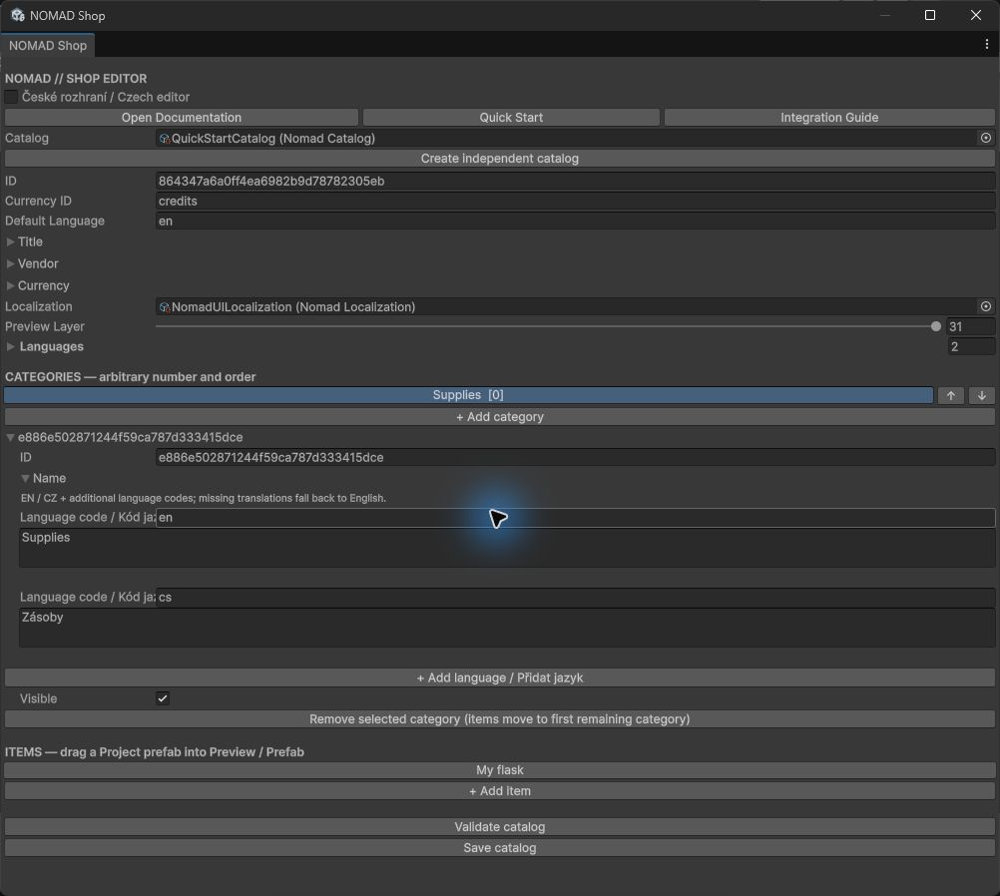
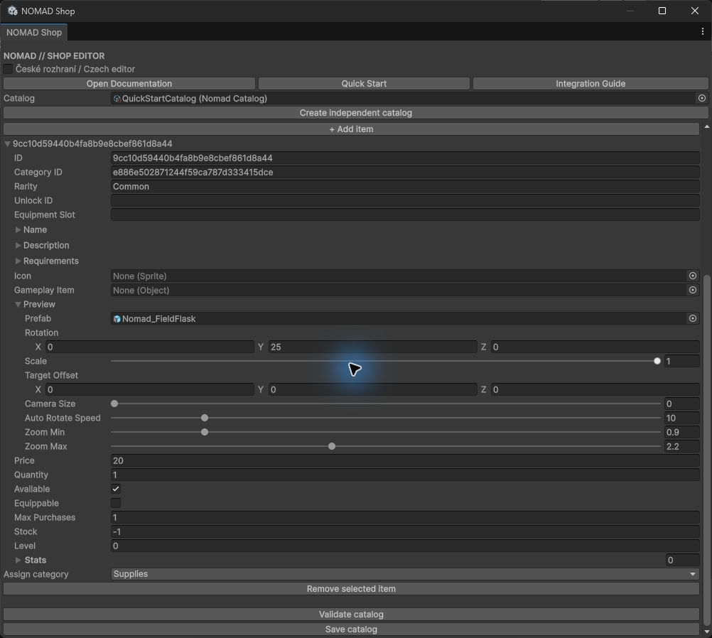

Dependency-aware import and package setup — RC.4
SHOP EDITOR — field and workflow reference
Open and choose a catalog
Use Tools > NOMAD > Shop Editor. The title is NOMAD Shop. The toggle České rozhraní / Czech editor changes editor action labels; generic serialized field labels remain Unity's English names. It does not switch the runtime UI language. At the top, Open Documentation, Quick Start and Integration Guide open the corresponding offline English/Czech HTML files.
Drag an existing NomadCatalog asset onto Catalog, or use its object-picker circle. This is a regular Unity object field, not an automatic catalog browser. For a new asset click Create independent catalog, choose a unique .asset path in your project and save. A new catalog has no categories/items. Do not copy an existing catalog for a distinct merchant without deliberately assigning a new catalog ID; copied IDs share history keys in one service.

Catalog fields
| Field | Actual effect |
|---|---|
ID | Stable catalog identity for stock/history keys; generated once. Do not change after purchases or saves exist. |
Currency ID | Machine identifier, default credits. Must exactly match IShopWallet.CurrencyID; changing the display name does not change this. One currency per catalog/service wallet. |
Default Language | Language code read by NomadDemo at Start. A custom host must set view.Language itself. Use en / cs, not cz. |
Title / Vendor / Currency | Localized heading, vendor subtitle and currency display name. Expand each foldout and edit its language entries. |
Localization | Optional NomadLocalization table for UI phrases. Assign the supplied table or create one with Tools > NOMAD > Create UI Localization. |
Preview Layer | Integer 8–31; reserve an otherwise unused layer. Temporarily hidden from existing game cameras while previewing. No Physics matrix change. |
Languages | Ordered list used by runtime language button. Include en and cs; add further codes together with content and UI translations. |
Categories: creation, rename, order, visibility, removal
Click + Add category; click its row to select it. Expand the selected definition foldout (its stable ID, or Element), then Name. Each translation has Language code / Kód jazyka and a text area. Enter en / English name and cs / Czech name. The row updates to the editor's selected language. IDs are generated and survive name changes.
Use ↑ / ↓ beside a category to move it one place; runtime visible tabs follow this order. Re-select the desired row after moving it. Toggle the selected category's Visible off to remove its runtime tab; its data/items are retained. This is presentation, not a purchase authorization boundary: custom backend/API callers still need rules.
Remove selected category (items move to first remaining category) moves its items to the first remaining category before removal. The last category cannot be removed while it contains items; remove those items first or create a replacement category. There is no bulk-delete dialog. Use Unity Undo for editor data edits where supported, then Save catalog. Back up catalogs before structural work.

Items: creation, edit, reassignment, removal
Click + Add item, select its row and expand its definition foldout (stable ID or Element). Initially it belongs to the first category. Use Assign category below the selected item's properties to choose the intended category. All items appear in the editor list, regardless of category. Change Name translations, not ID, to rename it. Expand Preview for 3D settings, Stats for display statistics. Click Remove selected item to remove the selected definition; this does not refund purchases or remove already owned units from your game inventory.
| Field | Actual effect |
|---|---|
ID / Category ID | Stable item identity / category relationship. Use Assign category rather than typing an ID. Renaming Name is safe; changing ID separates ownership. |
Name / Description | Localized item title and description shown in the middle column. |
Rarity / Unlock ID / Equipment Slot | Integration metadata. Rarity and slot have no built-in gameplay effect. Nonempty UnlockID blocks buying without IShopPurchaseRule; a supplied rule must enforce its meaning. |
Requirements / Level | Descriptive metadata, not automatic character-level gating. Implement checks in a rule or custom backend. Requirements is not rendered as a separate requirement panel by the current ShopView. |
Icon / Gameplay Item | Sprite fallback/list icon / optional game-specific object reference. Core does not spawn or equip GameplayItem automatically; inventory adapter interprets it. |
Price / Quantity | Positive integers (minimum 1). Price is total debit per delivery; Quantity is units added in that delivery, not a quantity selector. Free zero-price purchases are not supported. |
Available | False disables purchase, but the item remains visible in its category. This is not a visibility toggle. |
Equippable | Enables EQUIP ITEM once owned; calls backend.Equip. Actual equipment behavior belongs to the adapter. |
Max Purchases | Per catalog/item successful delivery count in this ShopTransactions instance. Default 1; 0 means unlimited. Not total units or durable account history. |
Stock | -1 unlimited; 0 unavailable; positive caps successful deliveries per service/catalog/item. The catalog asset number is not decremented. |
Stats | List of localized Label and string Value pairs displayed in the right column. Values are display text, not applied gameplay modifiers. |

Preview fields
| Field | Actual effect |
|---|---|
Prefab | Project prefab containing MeshRenderer+MeshFilter or SkinnedMeshRenderer. Renderer data only is copied. |
Rotation | Initial Euler X/Y/Z angles in degrees, applied to the normalized model. Start at (0,25,0). |
Scale | 0.2–1 relative viewport fill; 1 fills the safe fitted frame, 0.5 appears smaller. Not world meters and not a gameplay scale. |
Target Offset | Camera look-at offset in normalized preview units, magnitude clamped to 2. Keep near zero; large values can move the subject off-center. |
Camera Size | 0 uses automatic fit; positive value up to 10 provides a minimum orthographic frame. Larger makes the subject smaller. Auto-fit can expand further to avoid clipping. |
Auto Rotate Speed | 0–60 degrees/second; 0 disables auto rotation. Default 10. Resumes 1.75 seconds after pointer release/reset. |
Zoom Min / Zoom Max | Multipliers of fitted camera size, defaults 0.9 / 2.2. Lower is closer; higher is farther. Keep min <= max. Inspector ranges 0.88–1 / 1–4. |

Save, validate and verify
Click Save catalog at the bottom to persist the selected asset. Click Validate catalog for a dialog: Catalog valid means category/item IDs are nonempty/unique, item category IDs exist, and prices/quantities are positive. It does not test localization completeness, mesh/material validity, input, wallet currency, equipment rules or disk saving. Test the catalog in your own copy of the demo. In Play Mode, editing an already selected preview configuration may require selecting another item and back because the viewer caches the item/prefab; prefer configuring outside Play.
Tools > NOMAD > Create UI Localization creates a separate editable UI table. Tools > NOMAD > Create Own Demo Assets is a developer regeneration helper, not the normal Quick Start: it refuses to overwrite an existing demo catalog. Use the supplied demo instead.
See Quick Start, Localization, Integration, and Troubleshooting.